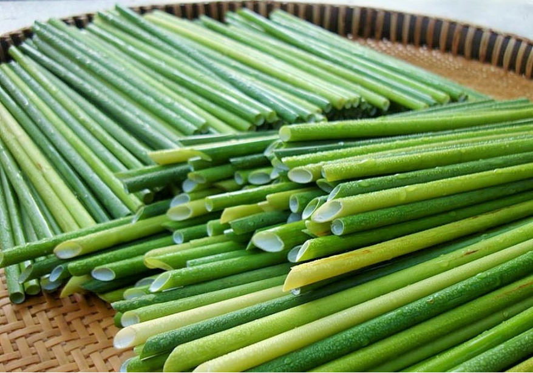
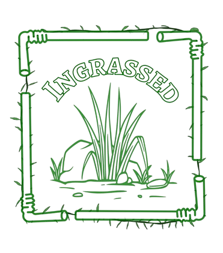

I’ve always felt a deep sense of connection with nature
Before we had cities, concrete roads, and machinery infused in our lives, we were already part
of nature.
“Our bodies and souls cycle along with her. Birth, life,
and death. Ingestion, digestion, excretion. Light and dark. Tranquility and
turmoil. Inhaling and exhaling. Receiving and giving”.
Indeed, human lives are inherently ingrained in nature.
That is where INGRASSED began. Inspired by the word “ingrained” and rooted in grass, something so simple yet fundamental, Ingrassed is my way of rethinking one of the most everyday items that wields so much influence on the environment: the straw. As a common type of single-use plastic and then thrown away, straws are one of the culprits of plastic pollution. But there is a solution to everything, isn’t there?
And Nature is the key. By switching to a biodegradable alternative such as grass, we hope to not only tackle plastic pollution that has been prevalent in Hanoi and Vietnam for decades, but also bring a little more of nature back into our life of hustle bustle.